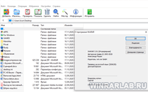

| Категория: | Архиватор | |
| Поддерживаемые ОС: | Windows XP | |
| Разрядность: | 32 bit, 64 bit, x32, x64 | |
| Для устройств: | Компьютер | |
| Язык интерфейса: | На Русском | |
| Версия: | Последняя | |
| Разработчик: | Евгений Рошал, Александр Рошал |
Популярнейший в русскоязычной среде архиватор создан российскими разработчиками более 20 лет назад и локализован на десятки иностранных языков. Все версии WinRAR на русском для Windows XP создает, распаковывает и редактирует архивы со сжатыми файлами. Софт удобно хранит данные, экономит память на жестком диске и защищает ценную информацию. WinRAR – одна из тех программ, без которых не обходится ни один пользователь ПК.
|  |  |
 |
{kind=link}
WinRAR для Виндовс XP на компьютер
WinRAR поддерживает такие распространенные форматы, как RAR (стандартное расширение для этой программы), ZIP и ISO. Вдобавок, софт работает со специфическими расширениями, которые другие архиваторы не распознают. Программа сжимает мультимедийные файлы (аудио, видео, фото) без потери качества. Поддерживает самораспаковывающиеся SFX-архивы. Охраняет данные при помощи менеджера паролей, а также 256-битного шифрования и алгоритма SHA-1. Таким образом, взломать файлы «ВинРАР» практически невозможно, кроме того, WinRAR обрабатывает архивы весом в сотни гигабайт, за что его любят профессионалы.

Windows XP поддерживает все версии WinRAR за исключением возможно будущих (тенденция на это уже есть). Для последнего стабильного обновления вам понадобится операционная система с пакетом обновлений SP3. В 5 редакции программы разработчики внедрили формат RAR6, ставший новым стандартом архиватора. Поэтому рекомендуем обновляться на версию 6.0 и выше, чтобы в самый ответственный момент не увидеть ошибку «неизвестный формат».
WinRAR для версий windows:
Скачать WinRAR на Windows xp бесплатно
| Приложение | OS | Распаковщик | Формат | Версия | Загрузка |
|---|---|---|---|---|---|
| WinRAR (Винрар) | Windows XP | OpenBox | x32 | Бесплатно (на русском) | |
| WinRAR (Винрар) | Windows XP | OpenBox | x64 | Бесплатно (на русском) | |
| Внимание!! Для вечной активации, скачайте ключ лицензии и перенесите файл rarreg.key в папку установленной программы. | |||||
Как установить WinRAR для Windows XP:
Запустите файл.

Ознакомьтесь с информацией и нажмите "Далее".

Нажмите "Далее", или снимите галочки с рекомендуемого ПО и нажмите "Далее". Если снять все галочки, рекомендуемое ПО не установится!

После всех шагов нажмите "Установить".
WinRAR не блокируется после истечения пробного периода (можно пользоваться всем функционалом, если не смущают призывы купить полную версию). Полностью локализован на русский язык: от интерфейса до справочного раздела. Умеет восстанавливать поврежденные элементы архива. Отлично оптимизирован для современных ПК с многоядерными процессорами и быстрой памятью. Наконец, поддерживает обратную совместимость с древними расширениями. Поэтому WinRAR выбирают миллионы пользователей по всему миру: от обычных чайников до компьютерных энтузиастов и профи.
Пользуюсь этой программой и не собираюсь отказываться.
Давно пользуюсь этим архиватором
о лучше и не сыскать
После переустановки Винды ставлю по-новой.
Программа просто огонь! Спасибо большое!
Установила ппосле покупке ноутбука
программа условно-бесплатная?
Спасибо за прогу. Все работает.
Огромное спасибо!